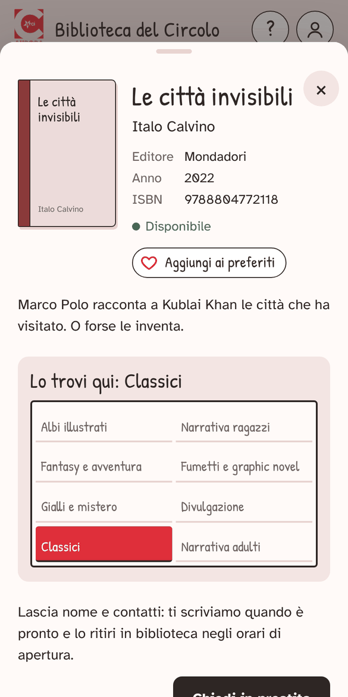

Biblioteca del Circolo ARCI Aurora · Leccio
circolo-aurora.github.io/biblioteca

Come funziona
Il catalogo della biblioteca del Circolo, sul telefono. Cerchi un libro, vedi se c'è e su quale scaffale sta, lo chiedi in prestito e lo ritiri in biblioteca. Non serve registrarsi e non serve nessuna password.
Mettila sul telefono
Si usa come un sito, ma puoi metterla tra le app: si apre con un tocco, a schermo intero, con l'icona rosa del libro fiorito.
Android
- Apri circolo-aurora.github.io/biblioteca con Chrome.
- Tocca Installa l'app sul telefono in fondo alla pagina. Se non c'è: menu ⋮ in alto a destra → Installa app (o Aggiungi a schermata Home).
- Conferma: l'icona compare tra le app.
iPhone
- Apri circolo-aurora.github.io/biblioteca con Safari.
- Tocca Condividi (il quadrato con la freccia verso l'alto; se non lo vedi, tocca prima •••).
- Scorri, tocca Aggiungi alla schermata Home, poi Aggiungi.
Cercare un libro
- La pagina iniziale mostra gli ultimi arrivati e poi uno scaffale per riga, come in biblioteca. Fai scorrere ogni riga di lato; Vedi tutti → apre lo scaffale intero.
- Per cercare, scrivi nella casella in alto: un pezzo del titolo, il cognome dell'autore, l'editore. La ricerca guarda in tutta la biblioteca.
- Mentre scorri, la lente rosa in basso a destra ti riporta alla ricerca.
- Dentro uno scaffale puoi tenere Solo disponibili e cambiare l'ordine.
In alto a destra ci sono due tasti tondi: ? apre questa guida, l'omino apre I miei libri.

La scheda del libro
Tocca una copertina: trovi autore, trama, se il libro è libero e Lo trovi qui, la piantina con lo scaffale giusto colorato di rosso.
- Disponibile
- puoi chiederlo in prestito.
- Prenotato
- qualcuno l'ha già chiesto e deve passare a ritirarlo.
- In prestito
- qualcuno lo sta leggendo: ripassa più avanti.
Una copertina disegnata, con il colore dello scaffale, vuol dire solo che non abbiamo ancora la foto: il libro c'è.
Per chiudere la scheda tocca × oppure trascinala in giù dalla linguetta in alto.

Chiedere un libro in prestito
- Nella scheda di un libro Disponibile tocca Chiedi in prestito.
- Scrivi nome e cognome, email e telefono, poi Invia la richiesta.
- Ti arriva una mail di conferma. Il libro diventa Prenotato: è tenuto per te.
- Quando è pronto la bibliotecaria ti contatta. Lo ritiri nella biblioteca del Circolo negli orari di apertura.
- Lo puoi tenere due mesi dal giorno del ritiro, poi lo riporti in biblioteca.
Se non hai una mail tua, usa quella di un genitore.

I miei libri
Si apre dall'omino in alto a destra. Ci trovi:
- i libri da restituire, con la data di scadenza;
- quelli in attesa di ritiro;
- quelli che hai già letto;
- i tuoi preferiti.
Se sull'omino compare un pallino rosso, un tuo libro scade entro una settimana (o è già scaduto).
Non c'è nessuna registrazione: il telefono si ricorda di te dalla prima richiesta di prestito. Per vedere la tua pagina su un altro telefono, apri il link che trovi nella mail di conferma.

Preferiti
Nella scheda di un libro tocca il cuore, ♡ Aggiungi ai preferiti: il libro finisce in I miei libri → Preferiti. Toccalo di nuovo per toglierlo. Serve per segnarti i libri da leggere, anche quelli che adesso sono in prestito a qualcun altro.
Suggerisci un libro
Un libro che vorresti trovare in biblioteca? In fondo alla pagina (e quando una ricerca non trova niente) c'è Suggerisci un libro: scrivi titolo, autore e, se vuoi, perché lo consigli. Nome e mail sono facoltativi: lasciali se vuoi sapere quando arriva.
Domande frequenti
Devo registrarmi o avere una password?
No. Per chiedere un libro bastano nome, email e telefono.
Quanti libri posso chiedere?
Non c'è un limite.
Per quanto tempo posso tenere un libro?
Due mesi dal giorno del ritiro. Se ti serve più tempo, rispondi alla mail di conferma o chiedi in biblioteca.
Non mi è arrivata la mail di conferma.
Guarda nello spam o nelle promozioni. Se dopo l'invio hai visto «Richiesta inviata», la richiesta è arrivata comunque. Se la mail era scritta male, la schermata te lo dice: in quel caso chiedi in biblioteca.
Ho cambiato idea: come annullo una richiesta?
Rispondi alla mail di conferma, oppure dillo in biblioteca: la richiesta viene annullata e il libro torna disponibile per gli altri.
Il libro che voglio è «Prenotato» o «In prestito».
Ripassa tra qualche settimana. Intanto mettilo nei preferiti, così non te lo dimentichi.
Come restituisco un libro?
Riportalo in biblioteca negli orari di apertura. La bibliotecaria lo segna come restituito e torna disponibile per gli altri.
«I miei libri» è vuoto, ma ho chiesto dei libri.
Succede se usi un altro telefono o un altro browser, o se hai cancellato i dati del browser. Apri il link nella mail di conferma: la tua pagina ricompare.
Posso usare la mail di un genitore?
Sì. La mail serve per la conferma e per ritrovare la tua pagina.
Non trovo un libro.
Prova con una parola sola del titolo o con il cognome dell'autore. Se proprio non c'è, suggeriscilo: la bibliotecaria lo riceve.
Perché alcune copertine sono disegnate?
Non abbiamo ancora la foto di quel libro. Il libro è sullo scaffale lo stesso.
Su iPhone non trovo «Installa».
Su iPhone si fa da Safari: Condividi → Aggiungi alla schermata Home. Con altri browser spesso l'opzione non c'è.
Serve internet?
Sì, per vedere se un libro è libero e per chiederlo. Senza connessione vedi l'ultimo catalogo caricato, ma non puoi mandare richieste.
Chi vede i miei dati?
Nome, email e telefono li vede solo chi gestisce la biblioteca del Circolo, e servono solo per i prestiti.